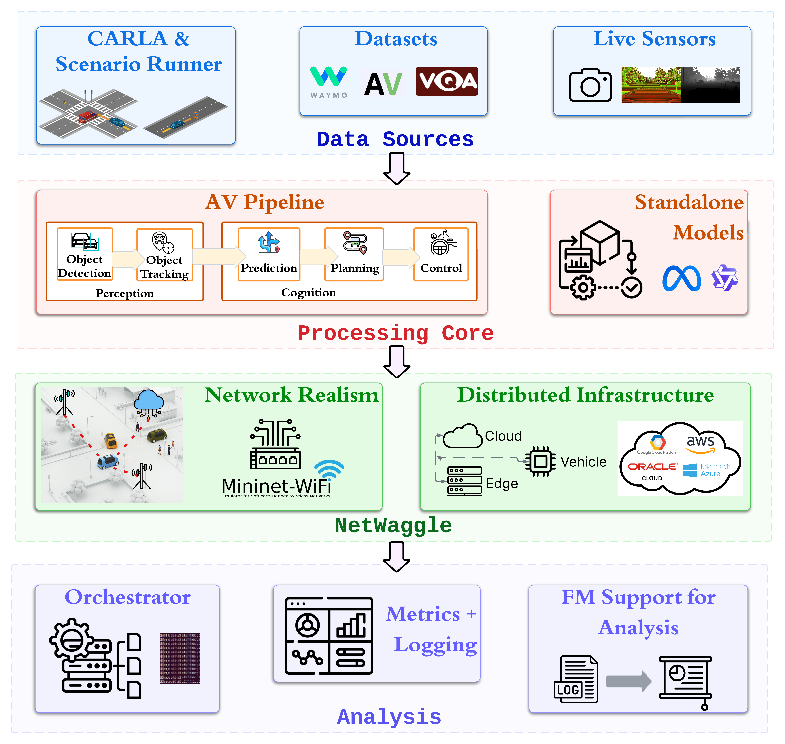
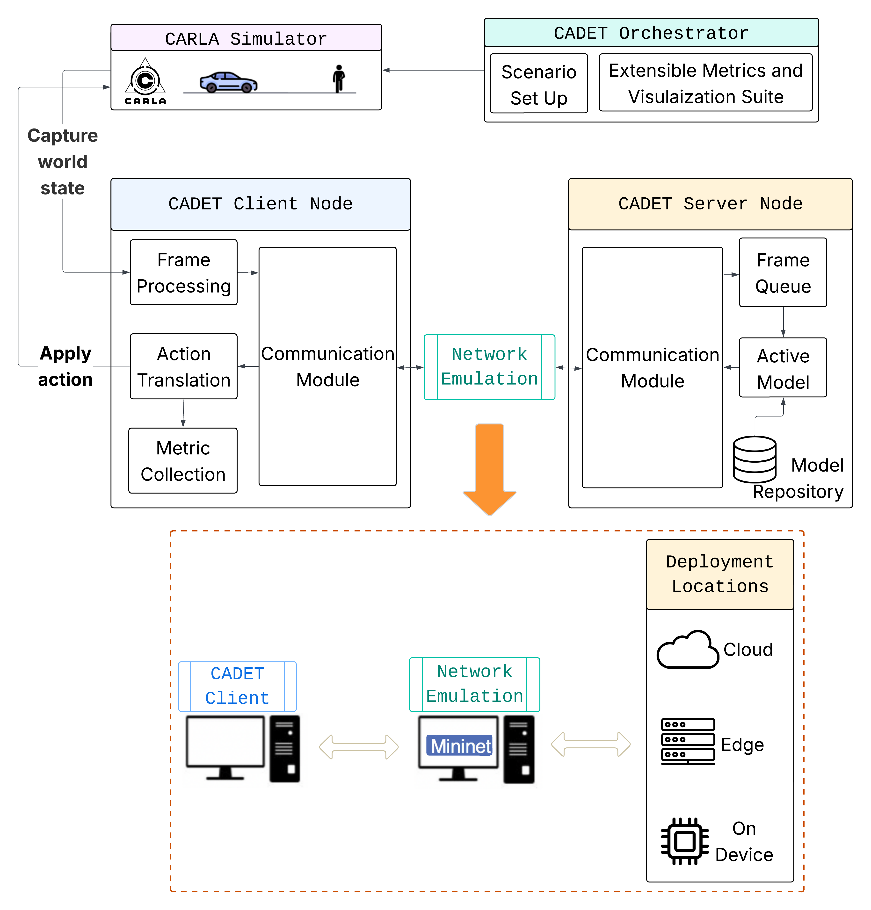

Architecture¶
CADET structures a cooperative-AV experiment as four layers, each with a single responsibility. The diagram below shows how data flows through them.


(a) CADET implements a modular four-layer architecture allowing components to be evaluated in isolation or integrated for end-to-end cooperative autonomy experiments. (Figure from the CADET paper.)¶


(b) NetWaggle enables distributed inference under device heterogeneity and realistic network dynamics. It adopts a client–server design and mimics real-world network profiles. (Figure from the CADET paper.)¶
See Network Backend Semantics for the three network backends and Reproducibility for run IDs and sweeps.
Data Source layer¶
The source layer provides frames to the client process. Swapping a source
does not change the rest of the experiment: the client sees the same
(frame_id, image_bytes) stream regardless of where frames come from.
- CARLA (
source.kind: carla) Connects to a running CARLA 0.9.10 simulator. The CARLA world runs in fixed-timestep mode (a simulator setting); ScenarioRunner’s
ScenarioManagerdrivesworld.tick()internally. CADET’s client attaches passively via camera callback — it never callsworld.tick()itself, so CADET’s own control loop is asynchronous: the server-side processing and client camera loop run concurrently without a blocking tick call.CADET does not spawn CARLA; the simulator must be running before the experiment starts (see Quickstart for the compose setup). ScenarioRunner runs as a sim hook: the orchestrator launches it as a subprocess before the client connects, and ScenarioRunner spawns the ego vehicle so the client can attach. CARLA is
carlasim/carla:0.9.10; the Python client is the PythonAPI egg, not the PyPI wheel. A preflight check verifies connectivity before the run starts.- Replay (
source.kind: replay) Reads a directory of images (sorted lexicographically) or a video file at the configured FPS. The same directory always produces the same frame sequence. No external process required.
- Synthetic (
source.kind: synthetic) Generates solid-colour frames of a fixed size in memory. No files, no simulator, no GPU required. Used by the framework’s test suite and for benchmarking the transport and network stack in isolation.
- Live (
source.kind: live) The replay source with a capture reader instead of a directory: an OpenCV capture opened on an integer
deviceindex or on a streamurl(exactly one of the two).fpscaps the pull rate,0taking frames as fast as the stream delivers them, andlimitis what ends the run. Run against an HTTP stream; the device form is not verified on a camera.
Processing Core layer¶
The processing core hosts the perception pipeline and the model registry.
- AV pipeline
Nine stage implementations in
cadet/pipeline/stages/, each named byimplin apipelineblock and each placed on a node: braking iscamera,yolo,roi_consecutiveandbrake_controller, with V2V and V2I adding their own gates. A change of node is a boundary the runtime realises as a transport link, so the same config runs with the stages together or apart. The detection, tracking and prediction component library they draw on isexamples/av_pipeline/pipeline/, ported from Pylot (Apache-2.0; seeNOTICE).- Model registry
A logical model name (e.g.
"pedestrian_v2") maps to per-device artifact paths inmodels.registry. At run time the orchestrator picks the artifact for the server node’sdevicetype (gpu,edge,hailo, …), so the same config runs on different hardware without edits.models.warmup: true(the default) runs one inference before the experiment starts. This avoids the cost of loading weights onto the GPU, model fusing, and cuDNN kernel setup on the first real frame.
NetWaggle layer¶
CADET separates two kinds of connections:
- Channels: direct data paths with no emulation.
A channel connects two nodes over a plain TCP socket. No qdisc is installed, no delay is added. Use a channel when the two nodes share a host or when you want to study model latency in isolation from network effects.
- Links: emulated-network paths.
A link has an associated
NetworkModel(network.mode, distribution, loss, bandwidth). The orchestrator wires the appropriate backend at startup and tears it down on exit, even after a crash, so a failed run never leaves traffic shaped.
Three backends are available; see Network Backend Semantics for a full comparison including why their latency numbers differ.
Analysis layer¶
- Orchestrator
The orchestrator turns a config into running processes and back again. Its startup order is fixed: cleanup → preflight → netem install → servers → sim hooks → clients/load → wait → teardown. A run is skipped on resume only when its
run.jsonhas"status": "complete"; a failed run is retried. See Orchestrator lifecycle below for the detailed sequence.- Metrics
Two recorders run every experiment: the frame-level latency log (
{run_id}_latency_location_log.csv) and the link report (link_report.json). An optionalqueuecollector can be added withmetrics.collectors: [queue]. See Metrics Reference for field definitions.- Config and sweeps
One YAML config drives everything.
extends:composes configs from a base.sweep.axesdefines a Cartesian product of parameter values; the orchestrator runs each cell and skips completed ones on resume. See Reproducibility for how run IDs are derived.- FM interface
cadet summarizeandcadet askreduce a run directory or a sweep to a record and put it to an OpenAI-compatible chat-completions endpoint named in theanalysissection. The key is read from the environment variable the config names.
Orchestrator lifecycle¶
The orchestrator starts all processes in a fixed order and tears them down in reverse:
Cleanup: kill any CADET orphan processes from a previous run and free their ports. Scoped to processes CADET owns (by pid file or cmdline match) and containers prefixed
cadet-.Preflight: check model artifact paths, port availability, and (if links are configured) emit a throughput warning if offered frame rate exceeds link capacity.
Netem install: apply
tcqdiscs for anynetemlinks.Servers: start server nodes; wait until each logs
"Waiting for connection"before proceeding (timeout: 60 s per server).Sim hooks: start the simulator hook (ScenarioRunner for CARLA experiments); wait for its readiness marker.
Clients / load workers: start client and load nodes.
Wait for workers: block until
end_onfires or a time limit is hit.Teardown — stop processes in reverse startup order; remove netem qdiscs; clear state store.
A run ends with one of these reasons (recorded in run.json):
|
When it fires |
|---|---|
|
All client/load workers exited cleanly. |
|
|
|
|
|
A guard process (server or sim hook) exited with a non-zero code. |
|
A sim hook exited cleanly when |
|
The orchestrator received SIGTERM or SIGHUP. |
``end_on`` values:
client_report(default): wait for all client workers to finish.sim_hook_exit: end when the sim hook exits cleanly; applyexperiment.end_grace_s(default 5 s) before stopping clients.first: end when either clients or the sim hook finishes first.
Time limits:
experiment.max_startup_s: bounds the cleanup + preflight + shaping + readiness phases. Defaults to the sum of all readiness timeouts, or 120 s.experiment.max_active_s: bounds the worker phase. Defaults tosource.scenario.timeout_s + 60if set, otherwise 600 s.
``cadet down`` kills all CADET-owned processes, containers (cadet-*),
and emulation namespaces recorded in the state store, then clears it.
Feature status¶
cadet validate names any option a config asks for that CADET will not run,
and refuses the run. What it accepts:
Feature |
Status |
Notes |
|---|---|---|
|
Supported |
Capture on a device index or a stream URL; run against a stream, not on a camera |
|
Supported |
Per-node container on a per-run network; lifecycle matrix passed |
|
Supported |
A role in a container on a second machine; four lifecycle cases passed |
|
Supported |
A role as a process in a virtual environment on a second machine, for a device that cannot hold a container image |
|
Supported |
RFC 6455 binary frames after one HTTP upgrade; run end to end over it |
|
Supported |
No length prefix; each record’s extent read from the record itself |
|
Supported |
Each runs on the node it measures and writes a per-node CSV |
|
Supported |
Hops’ delays compose into one model; measured on |
This table is maintained by hand and has drifted before. The authority is
cadet/config/implemented.py, which carries each option’s tier and the run
that verified it; cadet validate reads that module, not this page.